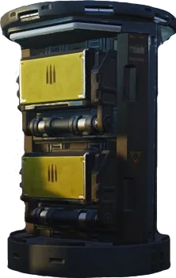
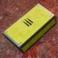
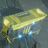
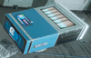
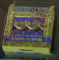

物资
Supplies

基本信息 信息
描述
Items that can be found on your missions!
Parent
Pickups
物资 contain various Boxes, Crates and Cases which refill consumables upon pickup.
补给箱

The Supply Box refills a large amount of Primary, Secondary, and 支援 弹药 plus 2 Stims and 2 Grenades. They can only be found in 重新补给 Hellpods and the B-1 补给背包.
| 主武器 | AR-23 | AR-23P | AR-23C | AR-61 | SG-8 | SG-8S | SG-8P | SG-225 | SG-225SP | SG-225IE | R-63 | R-63CS | BR-14 | MP-98 | SMG-37 | SMG-72 | CB-9 | JAR-5 | R-36 | PLAS-1 | PLAS-101 | LAS-5 | LAS-16 |
|---|---|---|---|---|---|---|---|---|---|---|---|---|---|---|---|---|---|---|---|---|---|---|---|
| 弹药 refilled | 7 | 10 | 10 | 5 | 60 | 60 | 8 | 7 | 8 | 6 | 8 | 6 | 8 | 5 | 7 | 7 | 8 | 6 | 6 | 6 | 4 | 3 | |
| % of max | 100% | 100% | 100% | 50% | 100% | 100% | 50% | 100% | 100% | 100% | 100% | 100% | 100% | ~71% | 100% | 100% | 100% | 100% | 100% | 100% | 100% | 100% | |
| 次要武器 | P-2 | P-4 | P-19 | P-113 | GP-31 | LAS-7 | |||||||||||||||||
| 弹药 refilled | 5 | 20 | 4 | 4 | 3 | ||||||||||||||||||
| % of max | 100% | 50% | 100% | 25% | 100% | ||||||||||||||||||
| 支援武器* | SG-88 | M-105 | MG-43 | MG-206 | APW-1 | AC-8 | RS-442 | GR-8 | FAF-14 | RL-77 | GL-21 | FLAM-40 | LAS-98 | ||||||||||
| 弹药 refilled | 20 | 2 | 2 | 2 | 3 | 5 | 10 | 3 | 2 | 4 | 2 | 4 | 1 | ||||||||||
| % of max | 50% | ~66% | ~66% | 100% | 50% | 50% | 50% | 60% | ~66% | 80% | 100% | 100% | 100% |
* 没有 卓越封装方法
弹药箱

The 弹药箱 refills a 小型 amount of Primary, Secondary, and 支援 弹药. They can be found around Human Structures.
| 主武器 | AR-23 | AR-23P | AR-23C | AR-61 | SG-8 | SG-8S | SG-8P | SG-225 | SG-225SP | SG-225IE | R-63 | R-63CS | BR-14 | MP-98 | SMG-37 | SMG-72 | CB-9 | JAR-5 | R-36 | PLAS-1 | PLAS-101 | LAS-5 | LAS-16 |
|---|---|---|---|---|---|---|---|---|---|---|---|---|---|---|---|---|---|---|---|---|---|---|---|
| 弹药 refilled | 3 | 5 | 5 | 2 | 30 | 30 | 4 | 3 | 4 | 3 | 4 | 3 | 4 | 2 | 3 | 3 | 4 | 3 | 3 | 3 | 3 | 3 | |
| % of max | ~43% | 50% | 50% | 20% | 50% | 50% | 50% | ~43% | 50% | 50% | 50% | 50% | 50% | ~29% | ~43% | ~43% | 50% | 50% | 50% | 50% | 75% | 100% | |
| 次要武器 | P-2 | P-4 | P-19 | P-113 | GP-31 | LAS-7 | |||||||||||||||||
| 弹药 refilled | 2 | 10 | 2 | 1 | 3 | ||||||||||||||||||
| % of max | 40% | 25% | 50% | ~12,5% | 100% | ||||||||||||||||||
| 支援武器 | SG-88 | M-105 | MG-43 | MG-206 | APW-1 | AC-8 | RS-442 | GR-8 | FAF-14 | RL-77 | GL-21 | FLAM-40 | LAS-98 | ||||||||||
| 弹药 refilled | 10 | 1 | 1 | 1 | 1 | 2 | 5 | 1 | 1 | 1 | 1 | 3 | 1 | ||||||||||
| % of max | 25% | ~33% | 50% | 50% | ~16% | 20% | 25% | 20% | ~33% | 20% | 50% | 75% | 100% |
Stim Crate

- The Stim Crates fully refills the 治疗剂 绝地潜兵 can carry. They can be found around Human Structures.
- Stims are a consumable carried by 绝地潜兵. When consumed, the Stim grants the user a short period of 生命值 regeneration and 无限体力 for one second.
- 已增加 to 6 秒 with the 医疗套件盔甲被动
- 绝地潜兵 掉落 with 2 Stims in their 库存 with a 最大 容量 of 4.
- 已增加 最大 容量 and initial 库存 by 2 with with the 医疗套件盔甲被动
- 绝地喷射舱 Space 优化 allows 绝地潜兵 to 掉落 in with the 最大 carry-able number of Stims.
手榴弹 Case

- The 手榴弹 case refills 4 Grenades. They can be found around Human Structures.
- 绝地潜兵 通常 掉落 with 3 Grenades in their 库存 with a 最大 容量 of 4—but the exact quantities vary by specific 投掷物.
- 绝地喷射舱 Space 优化 allows 绝地潜兵 to 掉落 in with the 最大 carry-able number of Grenades.
变更历史
补丁
描述
1.002.101
2025-02-04
修复
- 生命值 packs now fully restore all of the 绝地潜兵's stims
1.000.400
2024-06-13
未记录变更
- Stim crates will 否 longer refill all stims but will instead refill an amount of stims based on the number of 玩家 in the lobby.